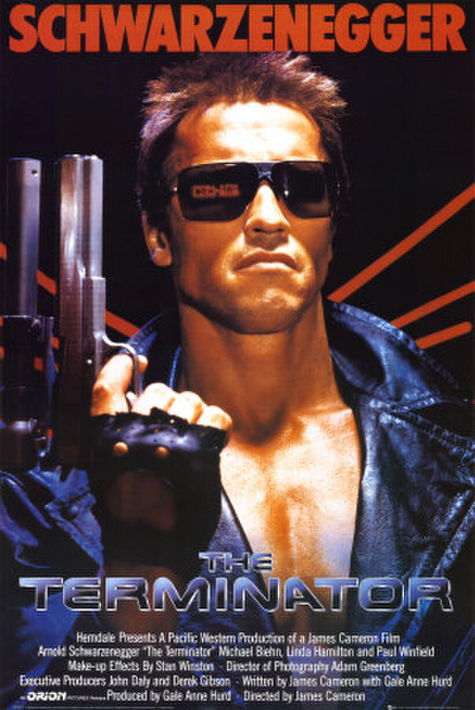
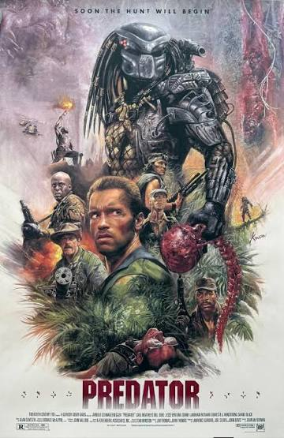
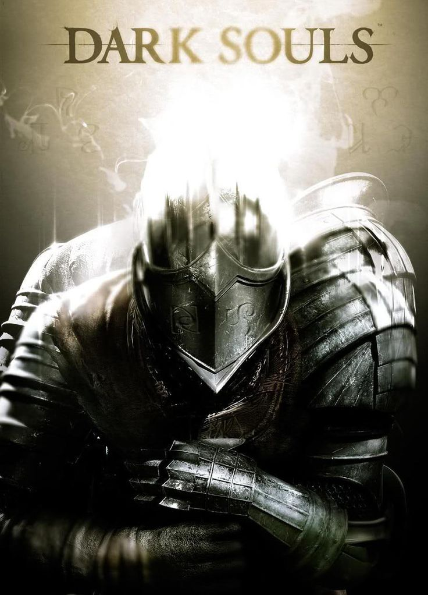
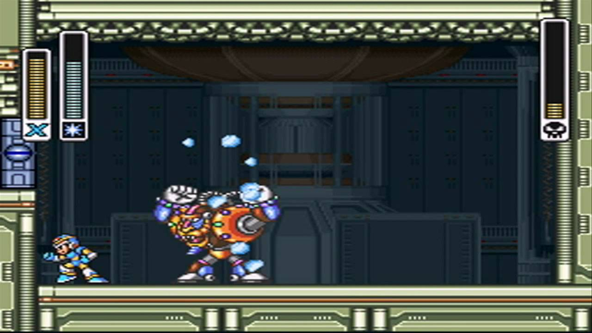

Filmes e Séries
O exterminador do futuro

Num futuro próximo, a guerra entre humanos e máquinas foi deflagrada. Com a tecnologia a seu dispor, um plano inusitado é arquitetado pelas máquinas ao enviar para o passado um andróide (Arnold Schwarzenegger) com a missão de matar a mãe (Linda Hamilton) daquele que viria a se transformar num líder e seu pior inimigo. Contudo, os humanos também conseguem enviar um representante (Michael Biehn) para proteger a mulher e tentar garantir o futuro da humanidade.
Predador

O major Alan "Dutch" Schaefer (Arnold Schwarzenegger) lidera uma equipe de resgate em uma selva da América Central, para tentar encontrar um ministro estrangeiro e funcionários do governo que saíram da rota e se perderam. O exército acredita que eles estejam nas mãos de guerrilheiros, mas o que eles não imaginam é que a floresta esconde uma ameaça mortal, um ser de outro planeta, fortemente armado, que sente enorme prazer em matar.
Música e Podcasts
Gwyn, Lord of Cinder (darksouls)

A música "Gwyn, Lord of Cinder" (Tema de Gwyn) é a trilha sonora da batalha final do jogo Dark Souls, composta por Motoi Sakuraba. Ao contrário das grandes e pomposas orquestras de chefes épicos em jogos, a peça é minimalista, tocada apenas em um piano melancólico e solitário
The Spark Mandrill Stage Theme (Mega Man X)

A música "The Spark Mandrill Stage Theme" é a trilha sonora do estágio de Spark Mandrill no jogo Mega Man X, composta por Setsuo Yamamoto. A música é rápida e energética, com uma melodia cativante que combina perfeitamente com a ação intensa do jogo. Tem uma composição instrumental de ritmo acelerado que mistura heavy metal digitalizado, hard rock e synth-rock dos anos 90, traduzindo perfeitamente a alta voltagem de uma usina elétrica invasora.
Games e Tecnologia
Shadow of the Colossus

Shadow of the Colossus é um jogo de ação e aventura desenvolvido pela Team Ico e publicado pela Sony Computer Entertainment. O jogador assume o papel de Wander, um jovem que entra em uma terra proibida para derrotar os colossos gigantes e trazer de volta à vida uma garota chamada Mono. O jogo é conhecido por sua jogabilidade única, onde o jogador deve escalar e derrotar os colossos em batalhas épicas, além de sua atmosfera melancólica e trilha sonora envolvente.
Lunacid

Lunácido é um RPG de exploração de masmorras em primeira pessoa desenvolvido pela KIRA e publicado pela Reflexo Crítico. Fortemente inspirado nos primeiros títulos da FromSoftware, como Campo do Rei e Torre Sombra, apresenta uma estética retrô distinta de 32 bits que lembra os títulos originais do PlayStation.